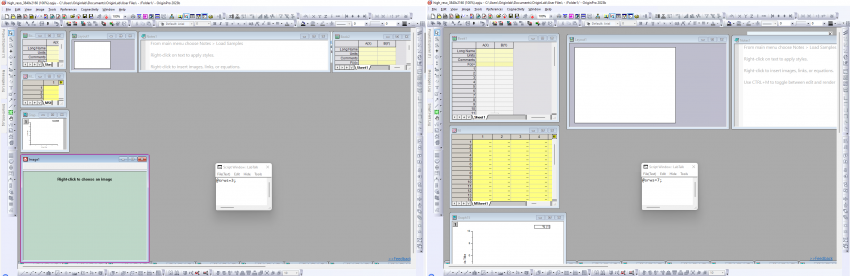

システム変数 @MFRLAによって、自動サイズ変更動作を変更またはオフにすることができます。
最終更新日：2023/4/22
Windowsのワークスペース上でOriginプロジェクトファイル (OPJU) を異なる設定 (異なる解像度) で保存して開いたり、コンピュータ上のセカンダリモニタを定期的に接続したり切断したりすると、小さな子ウィンドウでプロジェクトを開くときに問題が発生する可能性があります。
Originは最近のバージョンでこの問題を解消してきました。Origin をバージョン2023b以降にアップグレードすることをお勧めします。
PCの同じ場所でOriginプロジェクトを再度開くため、サイズと場所の情報がプロジェクトに保存されます。そのため、プロジェクトを低解像度のモニターで保存し、高解像度のモニターで開くと、サイズが一致しません。ウィンドウのサイズが調整されるため、小さくなる場合があります。(プロジェクトを高解像度のモニターで保存し、低解像度のモニターで開いても問題ありません)
この問題は、Originのウィンドウを最大化してからOPJUを保存すると修正されます。
さまざまな解像度のモニターに合わせて子ウィンドウのサイズを自動的に拡大縮小する方法
この問題は改善され、プロジェクト保存時にriginソフトウェアが最大化されていてそうでなくても、ワークスペースと子ウィンドウがモニターの解像度に合わせて自動的に拡大縮小されるようになりました。デフォルトで、OPJUを低解像度のモニターで保存し、高解像度のモニターで開くと、ワークスペースやウィンドウのサイズが小さくならないように調整されます。OPJUを高解像度のモニターで保存し、低解像度のモニターで開く場合、ウィンドウサイズはモニターの解像度に適合しない場合にのみ調整され、それ以外の場合は変更されません。
以前のバージョンでプロジェクトファイルを保存し、異なる解像度のモニターに合わせてサイズを自動変更したい場合
ウィンドウサイズを調整するシステム変数
システム変数@SRWSで子ウィンドウサイズと位置の調整をどのようにするか決定できます。システム変数値の変更方法についてはこのFAQを参照してください。
これら2つの値のセット:@SRWS = 1,2,3 および @SRWS = 5,6,7は、後者 (@SRWS = 5,6,7) がOS解像度の保存/読み込みの比率に応じてウィンドウをスケールするという点で異なることに注意してください。スケーリングは次の方法で行われます。Origin のワークスペース内にロードされた最小化されていない子ウィンドウの四角形は、オペレーティングシステムによって提供される保存時とロード時の画面スケールの比率によって、保存された四角形をスケーリングして決定されます。これは、ワークブックに表示される行数が保存と読み込みの間で変わらないことを保証するためのものです。
たとえば、同じプロジェクトを @SRWS の異なる値 (3と7) で保存し、低解像度のモニターで開きます。
| @SRWS=3 | @SRWS=7 |
|---|---|
|  | |
|
すべてのウィンドウは保存時と同じように表示されますが、保存時よりもはるかに小さくなります。つまり、表示される量が大幅に減少します。 |
すべてのウィンドウは保存時と同じサイズ (たとえば、ワークシートで同じ行数を表示) を持ちますが、代償としてすべてが収まらない (画像ウィンドウがまったく表示されない) ため、ワークスペースにスクロールバーが表示されます。 |
システム変数 @MFRLAによって、自動サイズ変更動作を変更またはオフにすることができます。 |
キーワード:小さい, 縮小, モニタ, 解像度, DPI, 他のスクリーン, ディスプレイデバイス, 二画面, 三画面, 2, 3